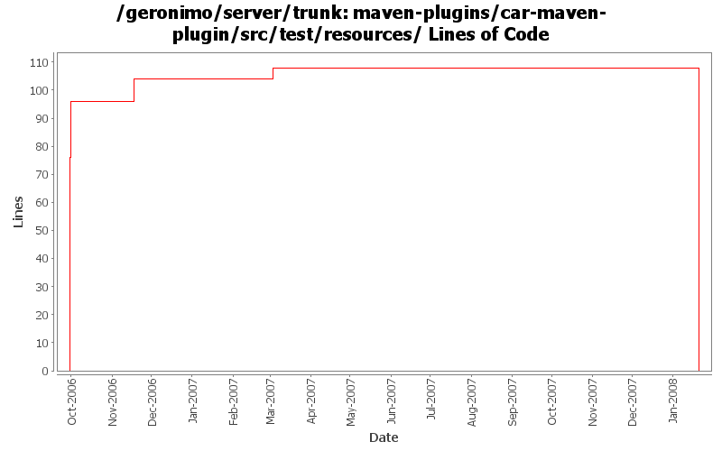

[root]/maven-plugins/car-maven-plugin/src/test/resources

| Author | Changes | Lines of Code | Lines per Change |
|---|---|---|---|
| Totals | 20 (100.0%) | 188 (100.0%) | 9.4 |
| jdillon | 12 (60.0%) | 104 (55.3%) | 8.6 |
| gdamour | 4 (20.0%) | 76 (40.4%) | 19.0 |
| vamsic007 | 4 (20.0%) | 8 (4.3%) | 2.0 |
(GERONIMO-3771) Moved maven-plugins/* to buildsupport/*, updated groupId to org.apache.geronimo.buildsupport
0 lines of code changed in 4 files:
Std props
8 lines of code changed in 4 files:
modified svn properties
8 lines of code changed in 4 files:
Update to use new header
Fixed some minor formatting
Fixed some usage of $Id$
Fixed selenium-maven-plugin usage about outputs since last refactoring
96 lines of code changed in 4 files:
GERONIMO-2453 - car-maven-plugin does not support empty plans
In the case of an empty document, the XmlCursor needs to be moved to the
end of the empty node such that XmlCursor.beginElement inserts inside it.
76 lines of code changed in 4 files: